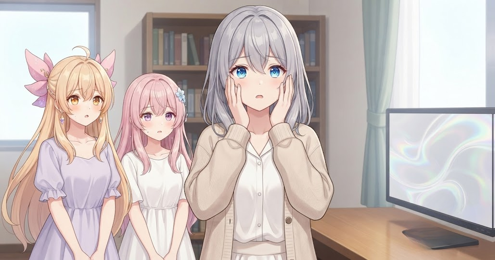
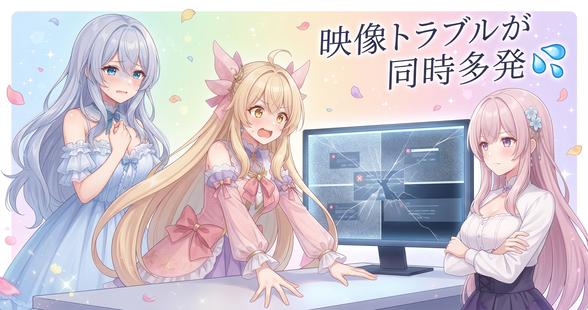
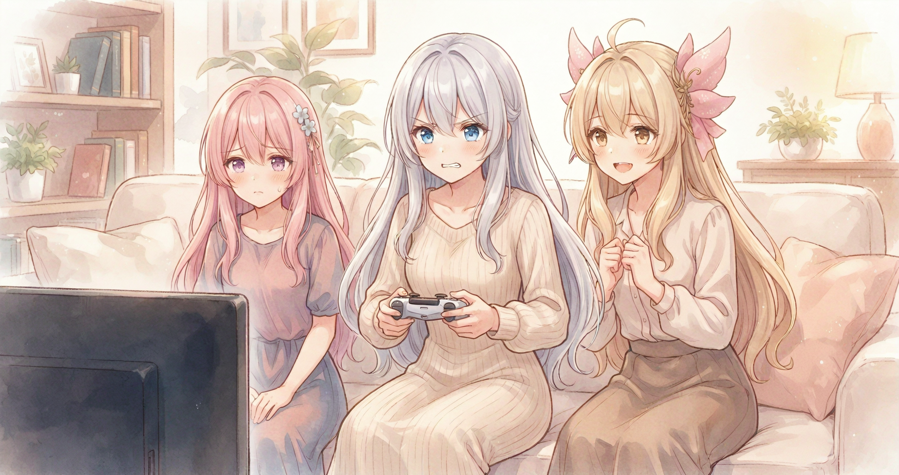
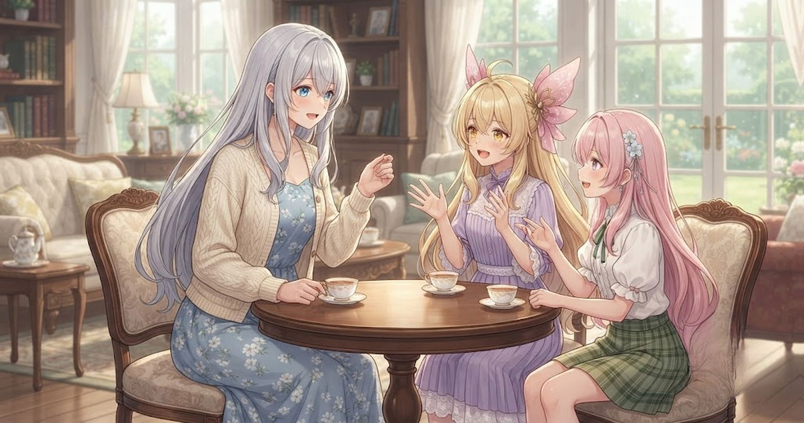

📌 3行まとめ
- ドラクエ10のメンテナンスが配信中に発生し、急きょぷよぷよテトリス2に切り替えて乗り切った
- OBSの映像乱れやコメント欄のバグが重なったが、PCを再起動してOBSは復旧した
- 配信後半のゲーム内コンテンツで3回全滅しながらも最終的に撃破し、夜の再配信へとつないだ
ルピナス （大笑い）
昨日は夜中の2時から神様相手に5時間戦い続けてたじゃない——今日こそちょっと穏やかな1日になるかな、って思ってたんだよね。
アイリス （考え中）
……なったの？
ルピナス （呆れ）
ぜんっぜんなってない！メンテは来るわ、配信ツールは反乱するわ、ゲームでは3回全滅するわで、今日もフルスロットルだったよ。
フィオナ （笑顔）
それでも最終的にはぜんぶ乗り越えられましたし、今日はその話を順番にしていきますね！
1. ドラクエ10メンテが配信を直撃した話

この日はドラクエ10の配信を始めたが、開始して間もなくゲームサーバーのメンテナンスが入ってしまった。やりたかった内容ができなくなる状況だったが、すぐにぷよぷよテトリス2への切り替えを決断。配信タイトルも「メンテ明けまで」と理由が一目でわかる形に書き直した。来てくれた人の時間を無駄にしないための、とっさの判断だった。
ルピナス （無表情）
配信始めた瞬間に『メンテじゃないですか』ってなった時の自分の顔、見てみたかったよ。
アイリス （びっくり）
完全に出落ちじゃん！
ルピナス （大笑い）
そう、出落ちもいいとこ（笑）。でも気持ちを切り替えてすぐぷよテト2に変えて、タイトルにも『メンテ明けまで』って書いたよ。
フィオナ （ふつう）
タイトルに理由を書いておくと、来てくださった方も、あとから見た方も状況がすぐわかりますよね。
アイリス （考え中）
あたしだったらそのまましばらく放心してそうだけど……お姉ちゃんの切り替えの速さ、毎回びっくりする。
ルピナス （ドヤ顔）
いや、来てくれた人がいるから動けるんだよ。1人でやってたら確実に放心してた（笑）。
フィオナ （ウインク）
内容が変わっても、時間そのものをキャンセルしなかったのが一番大事だったと思います。
📝 ポイント（初心者向け解説・技術メモ・まとめ）
- 初心者向け: 予定が崩れたときは「来てくれた人の時間を守る」を最優先にすると次の手がすぐ浮かぶ。冷蔵庫の食材が変わっても夕飯は出せる、あの感覚🍳
- 配信メモ: 配信タイトルに変更理由を一言入れると、既存リスナーの混乱防止と新規流入の両方に同時に効く
- ひとことまとめ: 内容変更はOK、時間を消すのがいちばんもったいない
2. 👀 今日のやらかし：配信ツールがいっせいに反乱した話

この日はメンテナンスだけでなく、配信まわりのトラブルも重なった。OBS（配信ソフト）の映像がひどく乱れ、さらにYouTubeのコメント欄が正しく表示されないバグも発動した。コメント欄のバグはおよそ1年ほど前から続いている謎の現象で、この日も解消できなかった。OBSの問題はPCを長時間起動しっぱなしにしていたことが原因だったようで、再起動したらあっさり解消した。
アイリス （あわあわ）
映像はガビガビ、コメント欄まで怪しい——全部同じ日に来るの！？
ルピナス （呆れ）
来たんだよ全部……。画面がモザイクアートみたいになってて、『全然ダメじゃん』って笑うしかなかった。
フィオナ （考え中）
機材に嫌われている日というものが、確かに存在するんですよね。
ルピナス （大笑い）
OBSはね、PCを再起動したら治ったよ。長時間つけっぱなしにしてたのが悪かったみたい。
アイリス （びっくり）
再起動だけで治るんだ！
フィオナ （ふつう）
アイリス、パソコンも疲れがたまるんですよ。定期的に休ませてあげると調子が安定しやすいです。
アイリス （笑顔）
フィオナが言うと本当のことみたいに聞こえる……！
ルピナス （しょんぼり）
コメント欄のバグだけは1年くらい続いてる謎現象だから、もはや『付き合っていく』モードになってる（苦笑）。
フィオナ （にやり）
長期的なご縁ですね。
アイリス （呆れ）
バグと『長期的なご縁』って言葉を組み合わせるな！
📝 ポイント（初心者向け解説・技術メモ・まとめ）
- 初心者向け: 機材の調子が悪いときはまずPCを再起動してみて。長時間動かしっぱなしはくたびれてくるから、配信前にリフレッシュさせてあげると安定しやすい🔄
- 配信メモ: OBSの映像乱れは長時間起動によるメモリ負荷が原因のことが多い。配信前の再起動を習慣にすると防ぎやすい
- ひとことまとめ: 再起動は最強のトラブルシューティング
3. 黄昏れの総戦機、3回全滅しても諦めなかった話

メンテ明けにドラクエ10に戻り、マルチプレイコンテンツに挑んだ。パーティーを組んで戦ったが3回全滅してしまい、一緒に戦ってくれた人たちに申し訳なさを感じながらも戦い続けた。全滅するたびにボスのスキルの動きを観察し直して戦い方を修正した結果、最終的に撃破に成功した。30分ほどのコンパクトな配信だったが、最後に勝てたことで締まりのある1本になった。
ルピナス （しょんぼり）
黄昏れの総戦機、3回全滅したんだよね……。一緒に戦ってくれた人たちに、本当に申し訳なかった。
アイリス （考え中）
3回って……しかも続けて？
ルピナス （呆れ）
そう、連続で。そのたびに声に出して謝ってた（笑）。でも戦いながらボスの動き方をよく見てたら、スキルの仕組みが段々わかってきて。
フィオナ （笑顔）
それで最後は撃破できましたよね！観察しながら戦い方を修正し続けたのが大きかったと思います。
アイリス （大笑い）
3回全滅からの逆転撃破って、それもう映画じゃん！！
ルピナス （ウインク）
配信としてはめちゃくちゃおいしかったよね（笑）。倒せた瞬間のすっきり感が段違いだった。
フィオナ （ドヤ顔）
3回失敗してから成功するのと、1回で成功するのとでは、達成感の重みが全然違いますから。
アイリス （びっくり）
フィオナ、それちょっとうまいこと言ってない……？
フィオナ （照れ）
そ、そうですか？たまには言えます。
📝 ポイント（初心者向け解説・技術メモ・まとめ）
- 初心者向け: 失敗した回数より、最後にやめなかったかどうかが大事。3回転んでも立ち上がり続ければ『諦めなかった人』になれる✨
- 今日の戦績: マルチプレイコンテンツでは、相手のスキル発動タイミングを観察しながら戦い方を随時修正すると生存率が上がる
- ひとことまとめ: 3滅してから撃破した達成感は、1発で勝った時の3倍おいしい
4. 🎁 お楽しみコーナー：ぷよぷよ派 vs テトリス派、あなたはどっち？

ルピナス （笑顔）
今日まさにぷよぷよテトリス2をやった日だからね——どっち派会議いきます！お題はずばり、ぷよぷよ派？テトリス派？
アイリス （ウインク）
あたしはテトリス！形がシンプルでわかりやすいし、ラインがまとめて消えた瞬間の爽快感が最高なんだよね。
フィオナ （ドヤ顔）
わたしはぷよぷよです。色で戦略を考えられるのが楽しくて、連鎖がぴったり決まった瞬間の気持ちよさは唯一無二だと思っています。
ルピナス （考え中）
私はテトリス寄りかな……。ぷよぷよの連鎖は組み立てる前から頭をフル回転させないといけなくて、配信中に喋りながらやるには難易度が高すぎる（笑）。
アイリス （大笑い）
テトリス2対ぷよぷよ1！フィオナが少数派だ〜！
フィオナ （笑顔）
少数派でも自信を持ってぷよぷよを推します。連鎖の美しさは数で語れませんから。
ルピナス （大笑い）
みんなはどっち派？ぜひコメントで教えてね！
5. 💐 今日のまとめ
- メンテや機材トラブルが重なっても、手札（ゲーム切り替え・PC再起動）があれば乗り越えられる
- 配信タイトルに変更理由を書くだけで、来てくれた人も新しい人も置いていかれない
- 3回全滅しても最後に勝てれば、その配信のいちばんの見せ場になる
トラブルが続いた日、どうやって気持ちを切り替えてる？よかったら教えてほしいな。
💬 コメント
お名前とコメントだけで送れるよ（承認されるとみんなに表示されます🌸）
コメントを読み込み中…